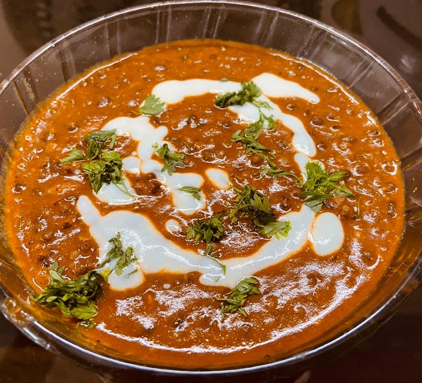

DAL MAKHNI
In frame is Dal Makhani is one of the most popular lentil recipes from the North Indian Punjabi cuisine made with Whole Black Lentils
(known as Urad dal or Kaali Dal in Hindi) and Kidney Beans (known as Rajma in Hindi).
INGREDIENTS :
2 cups urad dal
Cilantro/dhaniya leaves , 2 green chillis
1 cup curd
1 tablespoon ginger and garlic paste
1 tablespoon Garam masala,Kashmiri lal mirch powder,dhaniya powder
1/2 spoon turmeric
1 onion , 2.5 tomatoes
STEPS ONE CAN FOLLOW(if needed) :
First take water in a big pot and set on the gas and let that heat up, then add the dal and slow cook
Then on the other pan add 2 spoon butter ans 1 spoon oil after heating add chopped onion with ginger garlic paste and cook for 3-4 minutes
Then add tomato puree and cook it well and add masalas and again slow cook , then add the cream or curd and stir it properly
After all this id done , add the dal and slow cook for 30 minutes more